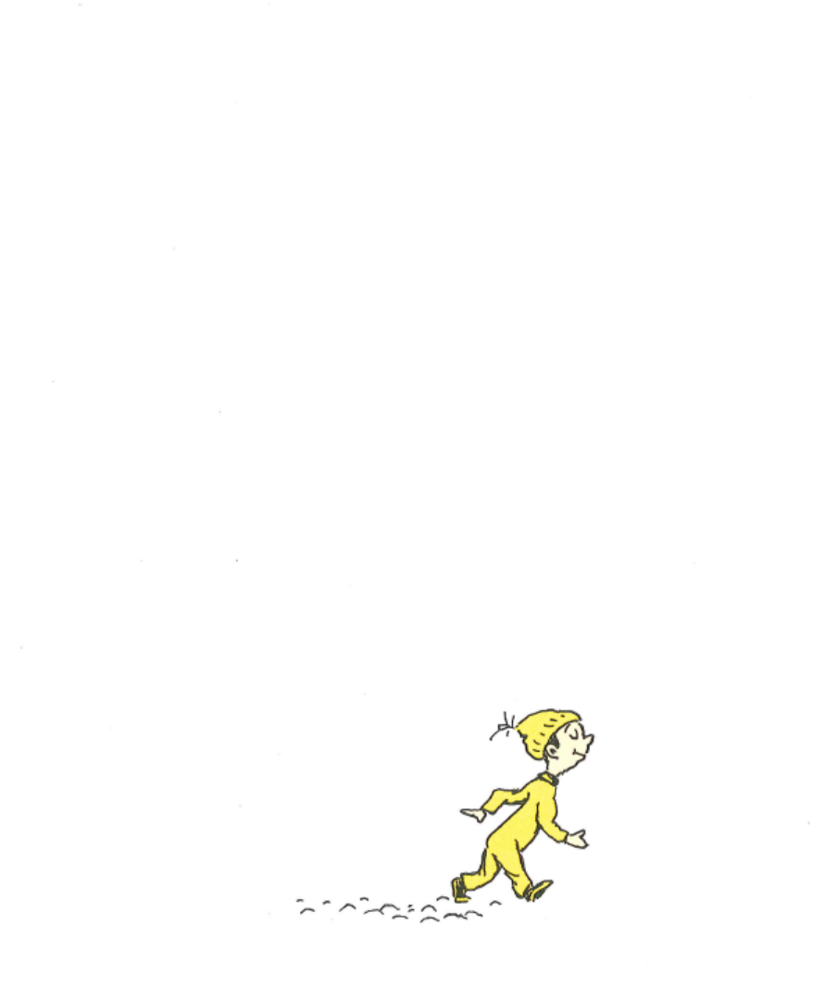
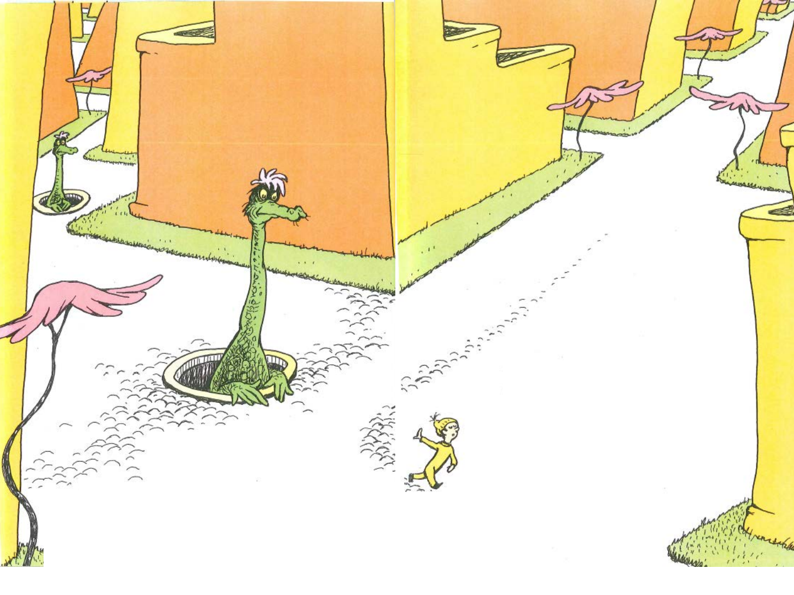
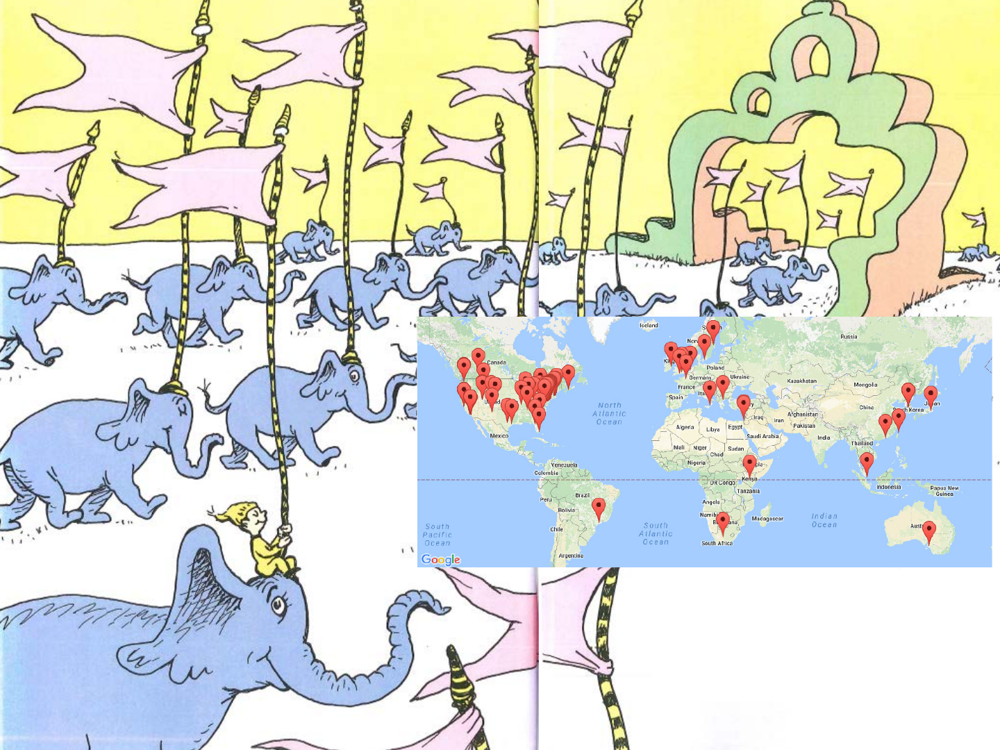
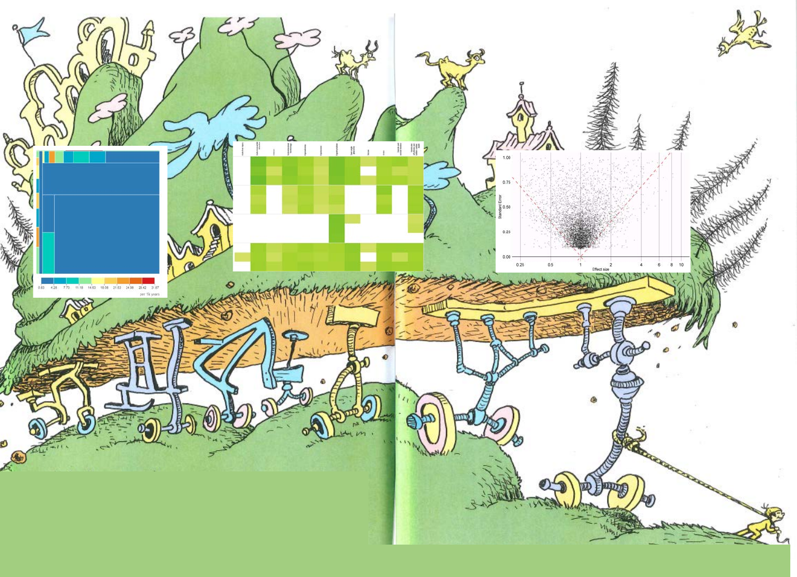

OHDSI Symposium 2016
Patrick Ryan

With a little help from
the OHDSI community

Congratulations!
Today is our day.
We're off to Great Places!
We're off and away!
We're out on our own. And we know what we know.
And WE are the guys and gals who'll decide where to go.
We have brains in our heads.
We have evidence to teach.
We can steer ourselves
To any destination we want to reach.

And we may not find any
epi studies we believe.
In that case, of course,
we'll head straight for an RCT.
We'll look up and down methods. Look 'em over with care.
About some we will say, “I don't choose to go there.”
With our head full of brains and our hands full of data,
we're too smart to chase down unevaluated betas.
It’s observational data
we have barely touched
With so much potential,
we can learn so much.
Here in these data, patients have voices.
They tell us what's happened,
we learn from their choices.
What happened to them?
What will happen to me?
What effects will be caused if I’m not exposure-free?
It’s these questions we have, and their answers we seek.
But sometimes what we find can seem rather bleak.
We all try our darnest to gin up responses,
But sometimes it feels like we’re spewing out nonsense.
Despite the brightest of minds and the best of intentions,
Why do we keep giving patients confusing answers to
straight-forward questions?
Shin et al, J Neurol 2014:
Different designs and different data yield different
answers to the same question
Bias and errors can happen
and frequently do
even to people as brainy
and empirical as you.
But when these things start to happen,
don't worry. Don't stew.
Calibration will guide you
to know what to do.
OH!
THE PLACES WE’LL GO!
We’ll research new methods, develop best practice.
We won’t let distractions or distractors distract us.
When we know the approach that makes the most sense,
We’ll build open-source software to make it immense.
With the community collaborating each having a say,
We’ll generate evidence the OHDSI way….
LARGE SCALE
If you’re new to the community,
Don’t worry, Don’t fret.
You won't lag behind, we'll bring you along.
To standardize data, to study disease,
to hack open-source software,
to estimate risks in a breeze.
Like collaborating on best practices, standards and rules,
and sharing in the design of open-source tools,
You’ll generate evidence that can actually be trusted
By comparing with others to see its not busted
You’ll evaluate your evidence to know its reliable
And you’ll disseminate openly to be verifiable.
These steps are a process that can be well-defined.
A reproducible science, if y’all don’t mind…
You’ll be left in the dust if you stay all alone,
Because together we'll do things you can't on your own.
We’ll be tempted to keep doing things as its been done.
Because changing behavior is never fun.
But there’s danger to keeping the status quo.
Because we now know we don’t know what thought we had known.
Publication bias and p-hacking have caused quite a pickle.
No wonder reviewers can be so darn fickle.
Schuemie OHDSI 2016:
85% of published exposure-outcome pairs have p < 0.05
There’s a different path forward that we can now take.
One outlined by Schuemie and Peter Rijnbeek.
For reliable Evidence Generation to work and succeed,
openness and transparency must be our common creed.
Sharing your protocol, posting your code,
reproducible in every step of the workflow
Discrimination is naughty, except in statistics
Where parsing signal from noise makes
a fine operating characteristic
So show me you find things that need to be found.
Show me your estimate match truth on the ground.
Use negative controls to show me your bias.
And I'll show you someone doing observational data science!
For evidence generated to be
any good,
we need evidence evaluation
to check under the hood.
And patients are waiting.
Waiting to know ‘what happened to others?’
Waiting to know ‘what will happen to me?’
Waiting to know ‘what causes what?’
Waiting for evidence to get them
out of their rut.
Patients are waiting for us!
Waiting for us to do what needs to be done
To transform our data and get on the run
To stop do studies one at a time
And start turning around evidence
right on a dime.
Somehow we must escape
All this waiting and staying.
And find a new music
we all feel like playing.
HAPPY BIRTHDAY RICH BOYCE!

A large-scale approach
Based in open science.
Together we’re all stronger
as an OHDSI alliance.

And will we succeed?
Yes! We will, indeed!
We know it now clearly
with .95 AUC. TOGETHER, WE'LL MOVE MOUNTAINS…OF EVIDENCE!
So....
be your name Vojtech or Adler or Feeney
or Christian Reich or Michael Matheny
or Schilling or Schuemie Or Szarfman Or Shah
or Hripcsak or Rijnbeek, whoever you are
We're off to Great Places!
Today is our day!
Our mountain is waiting.
So...let’s get on our way!
NOT THE END
Join the journey
Thank you for your support!
Patient-Centered Outcomes Research Institute
(PCORI)
Eugene Washington Engagement Award

Thank you for your sponsorship!
Thank you exhibitors!
Thank you OHDSI tutorial faculty!
CDM/ETL: Rimma Belenkaya, Karthik Natarajan, Mark Velez, Erica Voss
Technology stack: Taha Abdul-Basser, Lee Evans, Karthik Natarajan, Mark Velez
Cohort definition: Juan Banda, Jon Duke, Chris Knoll, Nigam Shah
Vocabulary:
Frank DeFalco, George Hripcsak, Christian Reich
Population-level estimation:
David Madigan, Martijn Schuemie, Marc Suchard
Thank you OHDSI organizing committee!
Kristin Feeney
Jon Duke
Lisa Schilling
Christophe Lambert
Steph Reisinger
Don O’Hara
Vojtech Huser
Ana Szarfman
Gregory Fusco
Andrew Williams
Matt Levine
Thank you OHDSI collaborators!
Thank you Maura!

OHDSI Symposium 2016
Join the journey!